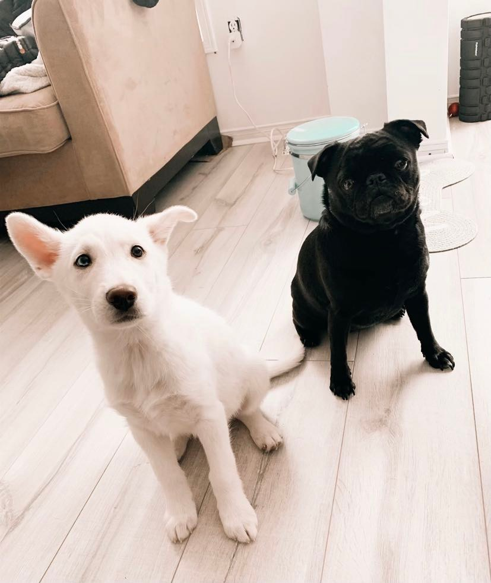

I spawned onto earth in 1996. To be exact, it was in Punjab, India. I teleported to Canada in 2004 and
have
had many spawn points across Ontario. Recently it is in Barrie, ON.
I currently have 2 beautiful dogs with my fiance, one is a black Pug/Brussels Griffon mixed named Ella
who
is turning 7 in January and a white Husky Shepherd mix named Freya turning 2 in November.
I have attended the University of Lakehead for BComm. My biggest achievement is buying a home during the
midst of the pandemic. My goal is to be a lazy coder.